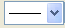

通常の2Dベクトルグラフに加え、極座標および三点ベクトルグラフでも、作図の詳細のベクトルタブでベクトルの編集ができます。3D ベクトルグラフのベクトル編集に関しては、3Dベクトルタブを参照してください。
|
直交座標と極座標の両方のXYXYグラフのベクトルタブ |
コンパスプロット のベクトルタブ |
|
直交座標のXYAM グラフのベクトルタブ |
三角座標のXYZXYZ ベクトルグラフのベクトルタブ |
| ベクトルの大きさで長さをスケーリング |
ベクトルの大きさの変化に合わせて矢先形状の長さをスケールします。 使用可能なオプション：
|
|---|---|
| 長さ |
矢先の長さを指定します。 単位は、ポイントです。 |
| 軸の開始角度（度） |
矢先の角度を決定します。 |
| 閉じる/開ける |
矢先を塗りつぶすには、閉じるラジオボタンを選択します。 矢先を塗りつぶさない(枠のみにする)には、開けるラジオボタンを選択します。 |
色のボタンからベクトルの色を選択します。
ベクトルの線のスタイルを変更します。スタイルツールバーの線/境界ツールで変更することもできます。
このコンビネーションボックスでベクトルの線の太さを入力または選択します。 線の太さはポイント単位とし、1ポイント＝ 1/72インチです。
線タブのあるすべての2Dベクトルグラフで、太さドロップダウンリストで列を選択でき、線の太さをその列にマップできます。ドロップダウンリストには現在のワークシートにある列のみ表示されるのでご注意ください。
列を選択すると、縮尺倍率を指定して、幅の列に値を掛けて線幅を定義することもできます。シンボルサイズの縮尺倍率を参照することができます。
スライダーを調整するか値を入力して、ベクトルの透過率を設定します。スケールは、0（透過なし）～100（完全に透過）の範囲で調整します。
特別なポイントの場合、自動チェックボックスにチェックを付けると、ほかのベクトルの透過率設定に従います。チェックを外すと、特別なポイントの透過率の設定が可能になります。
X端点ドロップダウンリストからXYXYベクトルグラフまたは三点ベクトルグラフのXの端点の値を持つ列を選択します。
Y端点ドロップダウンリストからXYXYベクトルグラフまたは三点ベクトルグラフのYの端点の値を持つ列を選択します。
Z端点ドロップダウンリストから三点ベクトルグラフのZの端点の値を持つ列を選択します。
Note:
|
これらの編集オプションは、XYAM 型のベクトルグラフのみに適用できます。
| 軸の開始角度（度） |
大きさコンビネーションボックスから、ベクトルの大きさを持つ列を選択します。 または、このコンビネーションボックスから値を選択することもできます。 角度は、ベクトルを二分するX軸に平行な線を基準とし、反時計回りに計測されます。 単位は、角度単位ドロップダウンリストから選択します。 |
|---|---|
| 大きさ |
大きさコンビネーションボックスから、ベクトルの大きさを持つ列を選択します。 または、このコンビネーションボックスから値を選択することもできます。 単位は、ポイントです。 |
これらの編集オプションは、XYAM 型のベクトルグラフのみに適用できます。
| 倍率 |
倍率コンビネーションボックスで、ベクトルの長さを拡大･縮小する倍率を選択または入力します。 たとえば、.5を入力すると、ベクトルの長さはオリジナルの半分の長さになります。 デフォルトの値は1で、倍率の値でベクトルの長さが決まります。 |
|---|---|
| 実際の大きさ |
このボックスにチェックを付けると、実際の大きさとして解釈され、ベクトルの終点のXY座標を修正するのに使用されます。グラフ内に表示された大きさは、XあるいはYの軸スケールが変更された時に一緒に変更されますが、実際の長さを保ちます。 チェックを外すと、グラフレイヤと相対的な大きさになります。 |
ベクトルの先端、中央、末端に、XY値を適用できます。それぞれのボタンを選択してください。
これらの編集オプションは、XYAM 型のベクトルグラフのみに適用できます。
| 角度単位 |
角度の単位を選択します。
|
|---|---|
| 規約 |
|
| オフセット角度（度） | ベクトルのオフセット角を度で指定します。
ベクトルの角度の値（A）と、オフセット角度が0の場合、ベクトルは3時の方向になります。 |
| 方向 |
オフセット角度の方向を指定します。
|